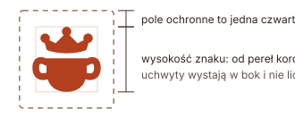

Wysokość znaku liczy się od czubków pereł korony do dna garnka; uchwyty wystają w bok i nie liczą się do wysokości. W kodzie nie liczy się tego drugi raz: znak ma 32 px, a wordmark 8 px odstępu, czyli dokładnie ćwierć.
Rysunek nie jest logotypem i nie wolno go używać jako znaku.